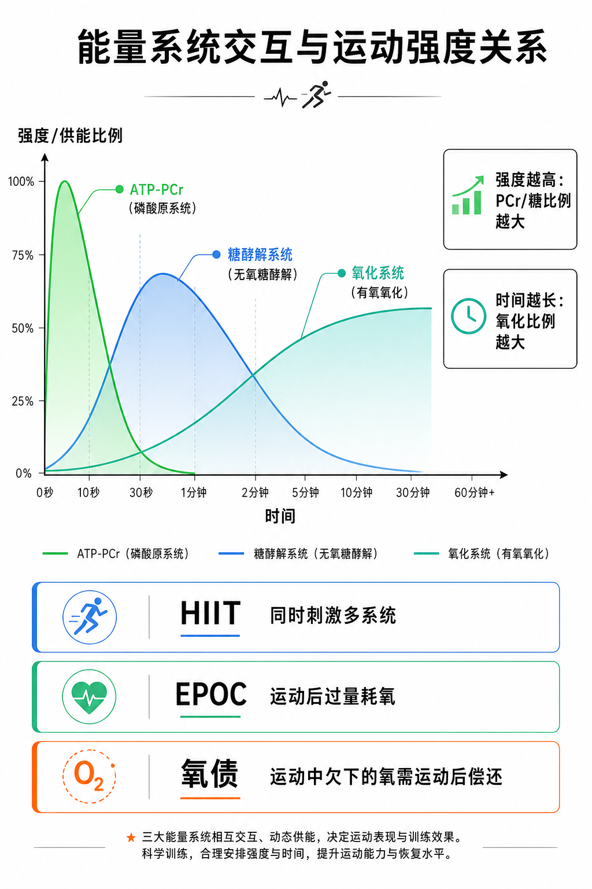

Day 25 · 能量系统交互与运动强度关系
一句话总结
三大能量系统不是三台互斥机器，而是同一组发动机的不同档位: 强度越高，ATP-PCr 和糖酵解占比越大；时间越长，氧化系统占比越大。HIIT 之所以狠，是因为它把这三套系统一起叫上场；EPOC 和氧债，则是运动后还在“补账”的那部分耗氧。

核心要点
-
三大系统同时供能: 只是比例随强度和时长变化，不是开关式切换。
先抓结论: 任何动作都在用三大系统，只是某一时刻某一套更像主角。底层机制
字面意思
ATP-PCr、糖酵解、氧化系统都在产 ATP，只是贡献大小不同。
大白话
像三个人抬一块板子，板子一直在动，但谁出力最多，会随场景变化。
训练含义
别问“哪个系统启动了”，先问“现在谁占大头、训练目标要谁多干活”。
肌肉只能直接用 ATP。三大系统都在给 ATP 续命，只是 ATP-PCr 最快、糖酵解居中、氧化系统最耐久。
真实例子一次深蹲起杠，前几秒 ATP-PCr 最突出；一组 12 次深蹲，糖酵解明显增加；连续 40 分钟慢跑，氧化系统变成主角。
常见误解❌以为每个动作只对应一个系统。✅其实任何动作都混用，只是比例变。
-
强度越高: ATP-PCr 和糖酵解比例越大，冲得越猛越偏短时快系统。
先抓结论: 高强度不是“只用一个系统”，而是把快系统拉到前台。
训练含义场景 主导倾向 原因 1RM、起跑、跳起 ATP-PCr 时间太短，必须立刻出力。 400 米后段 糖酵解 PCr 不够，速度维持转向拆糖。 HIIT 冲刺段 ATP-PCr + 糖酵解 强度高、恢复短，快系统一起顶上。 提高强度会把训练推向更高功率、更大代谢压力和更短可持续时间。想练爆发，就要接受快系统主导；想练耐力，就不能总把强度顶到天花板。
常见误解❌以为强度高就等于氧化系统没用。✅其实氧化系统仍在参与，只是比例下降。
-
时间越长: 氧化系统比例越大，越到后面越靠“慢而久”的供能。
先抓结论: 时间拉长后，身体会把更多 ATP 生产任务交给氧化系统。真实例子
0-10 秒
ATP-PCr 最快，适合单次爆发。
30 秒-2 分钟
糖酵解压力明显，常见于 HIIT 和中高强度间歇。
2 分钟以上
氧化系统占比持续上升，耐力和恢复更依赖它。
60 分钟骑行、节奏跑、长距离慢跑，都会把氧化系统推到主位；它不是慢到没用，而是久到能托底。
常见误解❌以为氧化系统只在“轻松有氧”里工作。✅其实只要时间够长，它就会越来越重要。
-
HIIT: 高强度间歇训练能同时刺激快系统和氧化系统。
先抓结论: HIIT 的价值在于“冲一段、歇一段、再冲一段”，三套系统都要被逼着配合。训练含义
冲刺段
ATP-PCr 和糖酵解迅速抬头，功率高。
恢复段
氧化系统加速回补 PCr、搬运代谢产物。
重复段
反复切换，训练输出能力和恢复能力。
HIIT 不是单纯“练喘”。它同时挑战短时爆发、糖酵解耐受和有氧恢复，所以对体能、减脂和心肺都更像复合刺激。
常见误解❌以为 HIIT 只练无氧。✅其实每次恢复都在调动氧化系统，整套训练是多系统协作。
-
EPOC 与氧债: 运动后仍在耗氧，是为了补回运动中没来得及完成的账。
先抓结论: 运动后呼吸还高，不代表“白喘了”，而是身体还在处理恢复任务。
真实例子概念 核心意思 别混淆成 EPOC 运动后过量耗氧，身体恢复时仍比静息多耗氧。 不是单一指标，更不是“脂肪燃烧神技”。 氧债 运动中欠下的氧需要在运动后偿还。 不是神秘债务，是对恢复需求的形象说法。 一次冲刺间歇后，心率、呼吸、体温和代谢都不会立刻回到静息，这段恢复期就是 EPOC 的一部分。
常见误解❌以为 EPOC 等于训练后疯狂燃脂。✅其实它只是恢复耗氧增加，真正减脂还要看总消耗和长期饮食。
-
训练应用: 先定目标，再定强度、间歇和主供能系统。
先抓结论: 训练设计不是“越喘越好”，而是让系统比例服务目标。
真实例子目标 强度/时长 怎么用 爆发 高强度、极短时 保速度、保质量、长休息。 增肌 中等强度、多组 兼顾张力和适度糖酵解压力。 耐力 低到中等强度、较长时 让氧化系统长期主导。 减脂 可坚持的总量 别只盯“燃脂区”，先保可持续。 同样是深蹲，5 组 3 次配 4 分钟休息，更像练爆发；10 组 10 次配短休，更像练代谢和肌耐力。
常见误解❌以为同一个动作只能有一种适应。✅其实负荷、休息和持续时间一变，主导系统和训练结果也会变。
常见误区
❌很多人以为三大系统是轮流开关。✅其实它们一直同时工作，只是比例变化。
❌很多人以为 HIIT 只是无氧。✅其实恢复段和循环中的回补，本身就在拉氧化系统参与。
❌很多人以为 EPOC 就是减脂捷径。✅其实它只是恢复耗氧增加，长期结果还看总训练量和饮食。
记忆口诀
强度高，快系统上；时间长，氧化接棒；冲一段，歇一段，HIIT 三系统都上场。意思是: 不是单选，而是看哪套主导、哪套补位。
翻转卡复习
实操关联
- 爆发: 低次数、高质量、长休息，让 ATP-PCr 和神经输出保住峰值。
- 增肌: 中等强度 + 合理休息，让糖酵解压力和机械张力同时有用。
- 减脂: 选能坚持的训练量，不只盯心率区间，长期总消耗更重要。
- 耐力: 长时稳定输出优先，让氧化系统、心肺和恢复能力一起进步。
- HIIT: 冲刺段和恢复段都要算进来，别只记“累”。